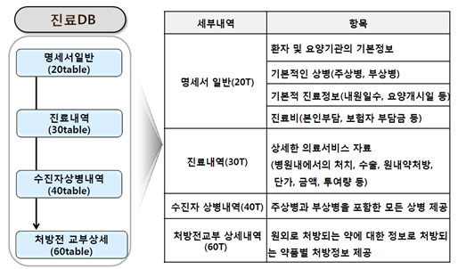
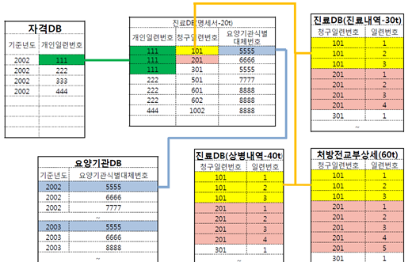
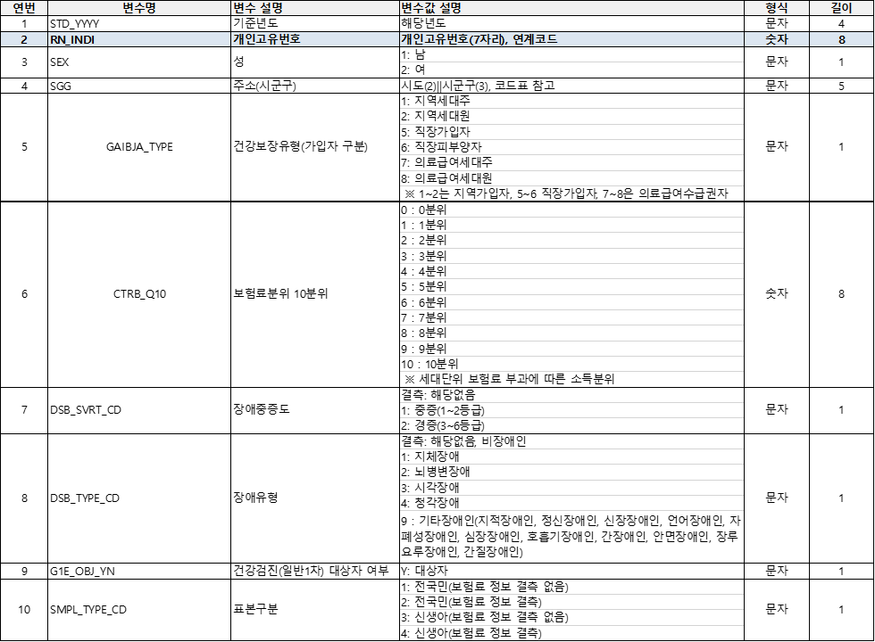
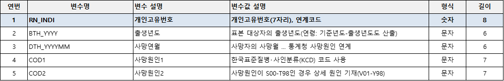
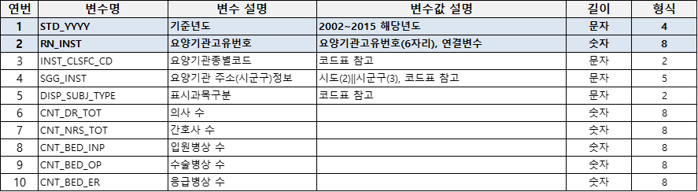
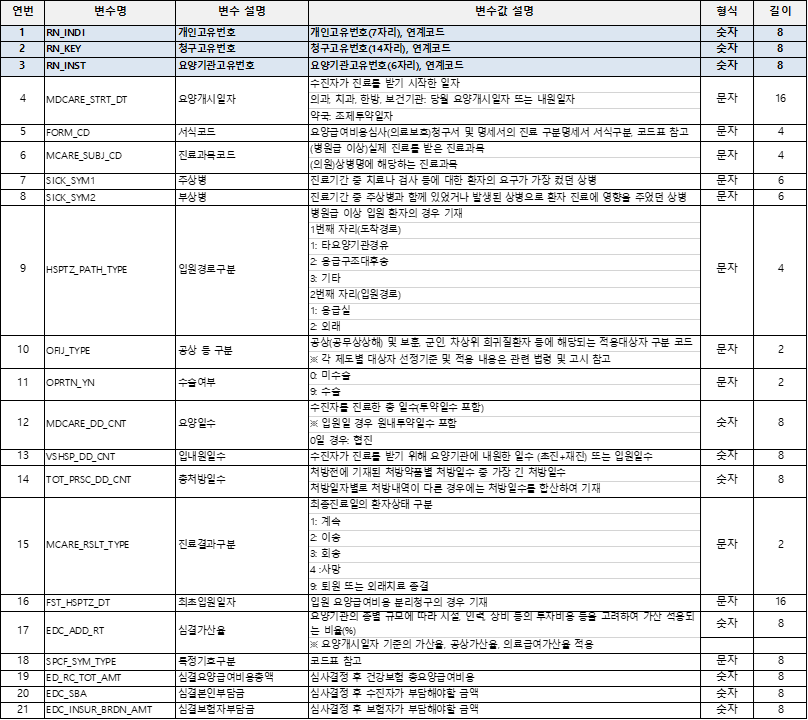
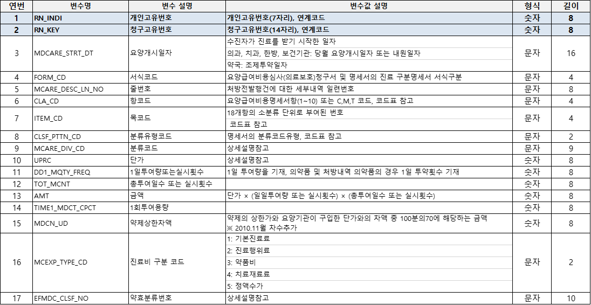
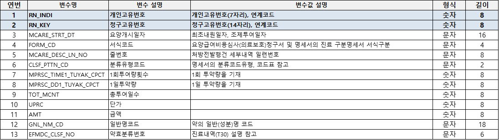

Chapter 3 공단표본코호트 데모자료
국민건강보험공단(National Health Insurance Service; NHIS)는 NHISS (National Health Insurance Sharing Service)를 통하여 표본 연구 DB, 맞춤형 연구 DB, 의료이용지표 등을 제공함으로써 근거에 기반한 보건·의료 분야의 정책 및 학술연구뿐 아니라 사회, 경제, 환경, 산업 등 다양한 분야의 연구에도 도움이 될 수 있도록 서비스를 제공한다.
표본 코호트 데모자료는 https://nhiss.nhis.or.kr/bd/ab/bdaba002cv.do;jsessionid=DNLXL2Ut7Hoqq1L1qZhKyua1upRBMr16of93H43VfcL1qq1NJc5qawPzeVaZE3Os.primrose22_servlet_engine10 에서 “데모 다운로드”를 클릭하면 다운받을 수 있다. 건강보험청구자료의 일반적 내용과 형태는 다음과 같다.


다운받은 공단표본코호트 데모자료는 EXCEL 파일로 되어 있으나, 자료를 불러들일때 불안전성을 없애기 위해 CSV 파일로 변환하여 불러들인다.
3.1 자격 DB - 자격 및 보험료 테이블

## rn_indi std_yyyy sex sgg gaibja_type ctrb_q10 dsb_svrt_cd dsb_type_cd
## 1 2270 2002 2 42110 2 8 NA NA
## 2 2270 2003 2 41281 1 5 NA NA
## 3 2270 2004 2 45111 1 4 NA NA
## 4 2270 2005 2 45111 1 6 NA NA
## 5 2270 2006 2 45111 1 4 NA NA
## 6 2270 2007 2 45111 1 5 NA NA
## g1e_obj_yn smpl_type_cd
## 1 1
## 2 1
## 3 1
## 4 1
## 5 1
## 6 13.2 사망 DB - 출생 및 사망테이블

death <- read.csv(file="NSC2_BND_1000.csv", header=T)
names(death) <- tolower(names(death))
head(death)## rn_indi bth_yyyy dth_yyyymm cod1 cod2
## 1 888234 1959 NA
## 2 572549 1971 NA
## 3 720544 1960 NA
## 4 964637 1960 NA
## 5 915731 1970 NA
## 6 84322 1962 NA3.3 요양기관 DB

inst <- read.csv(file="NSC2_INST_1000.csv", header=T)
names(inst) <- tolower(names(inst))
head(inst)## std_yyyy rn_inst inst_clsfc_cd sgg_inst disp_subj_type cnt_dr_tot cnt_nrs_tot
## 1 2015 108453 5 11680 NA 1 0
## 2 2015 100994 93 11680 NA 1 0
## 3 2015 76746 93 11680 NA 1 0
## 4 2015 102889 5 11650 NA 1 0
## 5 2015 78680 5 11680 NA 1 0
## 6 2015 76887 93 11680 NA 1 0
## cnt_bed_inp cnt_bed_op cnt_bed_er
## 1 0 0 0
## 2 0 0 0
## 3 0 0 0
## 4 0 0 0
## 5 0 0 0
## 6 0 0 03.4 진료 DB - 20 테이블

## rn_indi rn_key rn_inst mdcare_strt_dt form_cd mcare_subj_cd sick_sym1
## 1 746491 2.002100e+12 47036 20021016 3 14 L218
## 2 848340 2.002071e+12 47036 20020712 3 14 B351
## 3 992522 2.002091e+12 70468 20020923 3 10 N_
## 4 543044 2.002090e+12 22970 20020930 3 13 J304
## 5 928716 2.002080e+12 37742 20020826 3 13 J311
## 6 633585 2.002050e+12 87180 20020528 3 15 L02
## sick_sym2 hsptz_path_type ofij_type oprtn_yn mdcare_dd_cnt vshsp_dd_cnt
## 1 NA 0 0 1 1
## 2 NA 0 0 1 1
## 3 NA 0 0 1 1
## 4 32 0 0 1 1
## 5 NA 0 0 1 1
## 6 NA 0 1 1
## tot_prsc_dd_cnt mcare_rslt_type fst_hsptz_dt edc_add_rt spcf_sym_type
## 1 3 5 NA 0.15
## 2 3 5 NA 0.15
## 3 0 5 NA 0.15
## 4 0 5 NA 0.15
## 5 3 5 NA 0.15
## 6 0 5 NA 0.15
## ed_rc_tot_amt edc_sba edc_insur_brdn_amt std_yyyy
## 1 10590 3000 7590 2002
## 2 10590 3000 7590 2002
## 3 10590 3000 7590 2002
## 4 10590 3000 7590 2002
## 5 10590 3000 7590 2002
## 6 10590 3000 7590 20023.5 진료 DB - 30 테이블

## rn_indi rn_key mdcare_strt_dt form_cd mcare_desc_ln_no cla_cd item_cd
## 1 970799 2.00202e+12 20020225 3 5 09 1
## 2 970799 2.00202e+12 20020227 2 58 09 1
## 3 970799 2.00207e+12 20020716 3 4 09 1
## 4 970799 2.00205e+12 20020506 2 51 09 1
## 5 970799 2.00206e+12 20020612 3 3 09 1
## 6 970799 2.00202e+12 20020227 2 15 04 1
## clsf_pttn_cd mcare_div_cd uprc dd1_mqty_freq tot_mcnt amt time1_mdct_cpct
## 1 1 B1010 940 1 1 940 NA
## 2 1 B1010 940 1 1 940 NA
## 3 1 C2210 1570 1 1 1570 NA
## 4 1 B1530 2210 1 1 2210 NA
## 5 1 E6541 4100 1 1 4100 NA
## 6 1 KK059 300 1 1 300 NA
## mdcn_ud mcexp_type_cd efmdc_clsf_no
## 1 NA 2 NA
## 2 NA 2 NA
## 3 NA 2 NA
## 4 NA 2 NA
## 5 NA 2 NA
## 6 NA 2 NA3.6 진료 DB - 40 테이블

## rn_indi rn_key mdcare_strt_dt form_cd mcex_sick_sym detail_tmsg_subj_cd
## 1 596535 2.002120e+12 20021202 3 J209
## 2 615374 2.002121e+12 20021202 3 J209
## 3 1005547 2.002121e+12 20021202 3 J209
## 4 226594 2.002120e+12 20021202 3 J209
## 5 204930 2.002121e+12 20021202 3 J209
## 6 798943 2.002040e+12 20020401 3 J209
## sick_clsf_type std_yyyy
## 1 NA 2002
## 2 NA 2002
## 3 NA 2002
## 4 NA 2002
## 5 NA 2002
## 6 NA 20023.7 진료 DB - 60 테이블

## rn_indi rn_key mdcare_strt_dt form_cd mcare_desc_ln_no clsf_pttn_cd
## 1 819784 2.002120e+12 20021202 3 1 3
## 2 367481 2.002090e+12 20020917 3 1 3
## 3 478840 2.002091e+12 20020909 3 1 3
## 4 179714 2.002111e+12 20021126 3 1 3
## 5 925523 2.002070e+12 20020704 3 1 3
## 6 279031 2.002050e+12 20020514 3 1 3
## mprsc_time1_tuyak_cpct mprsc_dd1_tuyak_cpct tot_mcnt uprc amt gnl_nm_cd
## 1 1 3 2 30 180 106301ATB
## 2 1 3 2 30 180 268000ATB
## 3 1 3 2 30 180 106301ATB
## 4 1 3 2 30 180 268000ATB
## 5 1 3 2 30 180 136801ATB
## 6 1 3 2 30 180 136801ATB
## efmdc_clsf_no
## 1 222
## 2 222
## 3 222
## 4 222
## 5 222
## 6 222